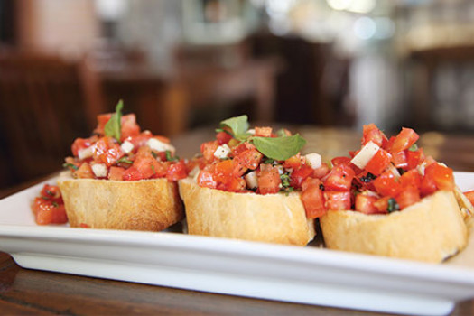

Entrada: Bruschetta con Tomate y Albahaca
Ingredientes
- 3 rebanadas de pan rústico
- 2 tomates maduros
- 1 diente de ajo
- Hojas de albahaca fresca
- Aceite de oliva virgen extra
- Sal y pimienta al gusto
Pasos
Paso 1: Tostar las rebanadas de pan hasta que estén doradas.
Paso 2: Frotar suavemente el diente de ajo sobre la superficie del pan tostado.
Paso 3: Cortar los tomates en cubos pequeños y mezclarlos con la albahaca picada, aceite de oliva, sal y pimienta.
Paso 4: Colocar la mezcla de tomate sobre las tostadas.
Paso 5: Servir inmediatamente.